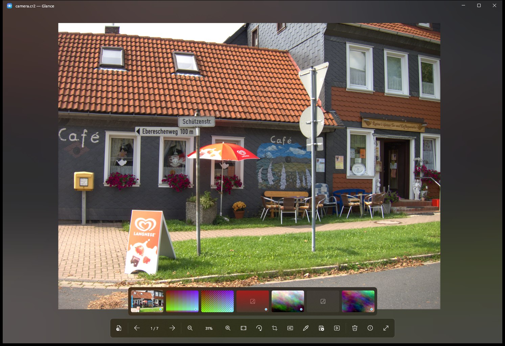

Opens what Windows can't
HEIC, AVIF, JPEG XL, RAW, PSD and HDR. Every decoder is bundled, so there's nothing to buy from the Store.
A free, open-source viewer for Windows 10 and 11. It opens what Windows can't, from iPhone HEIC to camera RAW, with no codec extensions, no account and no network access.

Glance does one job well: it opens your photo and gets out of the way.
HEIC, AVIF, JPEG XL, RAW, PSD and HDR. Every decoder is bundled, so there's nothing to buy from the Store.
Decoded at screen size, drawn on the GPU. The next 16 photos in your direction are ready before you get there.
No telemetry, no account, no network connections. Your photos never leave your PC.
HEIC, RAW and the other formats Windows shows as blank icons get real previews in File Explorer.
Crop, rotate, save as. Originals are never overwritten silently, and deletes have a 5-second undo.
Two photos side by side with synchronised zoom. An 8× loupe copies any pixel's colour as #RRGGBB.
Live RGB histogram, camera, lens, exposure, date taken and GPS. ICC profiles are colour-managed to sRGB.
RAW files open instantly with the camera's own preview; full RAW development kicks in when you zoom.
Press ? in the app to see them all.
The right build for your PC is picked for you. About 30 MB, and setup takes under a minute.
Pick your processor and package above. Every version is on GitHub Releases.
Open the setup, or unzip and run Glance.exe. The file isn't code-signed yet, so if SmartScreen warns, choose More info, then Run anyway.
On first launch Glance offers to open Settings › Default apps at its own entry. Choose Glance there.
Every release is built from this public repository by GitHub Actions, and you can check the build log for each file. Until the installer is code-signed, SmartScreen warns about new downloads.
Windows 10 version 1809 or later, or Windows 11. Nothing else: the .NET runtime and every decoder are included.
Run Glance.exe --register. It registers for your user only and needs no admin rights.
From Settings › Apps, like any other app. For the portable build, Glance.exe --unregister removes the integration; then delete the folder.